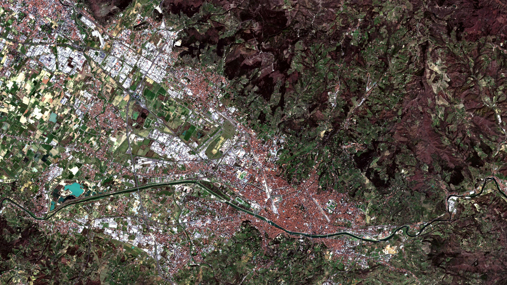

News from actinia


Let's STAC!  FOSS4G 2022 Firenze
FOSS4G 2022 Firenze
Vol. 2

Changes from 2021-09-30 to 2022-08-24
https://github.com/mundialis/actinia_core/compare/1.2.1...4.2.1
162 Commits, 267 Files changed, 19 contributors, 18 releases
## New Contributors
* @joaherrerama made their first contribution in https://github.com/mundialis/actinia_core/pull/275
* @Momen-Mawad made their first contribution in https://github.com/mundialis/actinia_core/pull/350
## [4.2.1] - 2022-08-05
## [4.2.0] - 2022-08-03
## [4.1.0] - 2022-07-20
## [4.0.1] - 2022-05-20
## [4.0.0] - 2022-04-01
## [3.3.0] - 2022-03-31
## [3.2.0] - 2022-03-23
## [3.1.3] - 2022-03-11
## [3.1.2] - 2022-02-23
## [3.1.1] - 2022-02-03
## [3.1.0] - 2022-02-02
## [3.0.1] - 2022-01-19
## [3.0.0] - 2022-01-13
## [2.3.1] - 2021-12-22
## [2.3.0] - 2021-12-16
## [2.2.0] - 2021-12-08
## [2.0.1] - 2021-11-25
## [2.0.0] - 2021-10-13
#### Add vector upload (issue 180, #260) [2.0.0]
* Add support to upload a vector layer via the endpoint
* `/locations/{location}/mapsets/{mapset}/vector_layers/{vectorlayer}`
* The vector formats GPKG, GeoJSON and a zipped Shapefile is supported.
* Developed by @anikaweinmann and @griembauer
* An example request is:
curl -L -u 'actinia-gdi:actinia-gdi' -X POST -H "Content-Type: multipart/form-data" -F "file=@/home/....zip" http://localhost:8088/api/v1/locations/nc_spm_08/mapsets/test_mapset/vector_layers/testvector

#### Enable separate redis queue per job by @mmacata in (#355) [4.1.0]
Related PRs:
* Reactivate redis queue by @mmacata in (#304) [3.2.0]
* Allows receiving of job and job execution in separate actinia instances
* Add option to shutdown worker when queue is empty by @mmacata in (#358) [4.2.0]
* Worker won't use resources, when inactive
* Always use local queue for sync requests by @mmacata in (#361) [4.2.0]
* Allows quick response of synchronous requests, eg. get mapsets
Config example:
[QUEUE]
redis_queue_server_url = redis-queue
redis_queue_server_password = pass
worker_prefix = job_queue
queue_type = per_job
Start worker:
QUEUE_NAME=job_queue_resource_id-2918c1f0-d0ca-4fd4-8ce0-8ef0f226b08d
rq_custom_worker $QUEUE_NAME -c /etc/default/actinia --quit
#### actinia-python-client
Python library to access an actinia server easily via python.
* Available on GitHub: [https://github.com/mundialis/actinia-python-client](https://github.com/mundialis/actinia-python-client).
* See full documentation here: [https://mundialis.github.io/actinia-python-client](https://mundialis.github.io/actinia-python-client)
VERSION="0.1.2"
pip3 install "actinia-python-client @ https://github.com/mundialis/actinia-python-client/releases/download/${VERSION}/actinia_python_client-${VERSION}-py3-none-any.whl"
##### Current Features
- Import: `from actinia import Actinia`
- Connect: `actinia_mundialis = Actinia()`
- Get version and authenticate
- Get locations, location information, create and delete a location
- Get mapsets
- Get, describe, upload and delete raster layers
- Get, describe, upload and delete vector layers
- Synchronous and asynchronous Process Chain Validation
- Ephemeral Processing
#### actinia-tiling-plugin and actinia-parallel-plugin by @anikaweinmann and @griembauer
actinia-tiling-plugin https://github.com/mundialis/actinia-tiling-plugin
{
"width": "4000",
"height": "4000",
"grid_prefix": "grid"
}
curl -u ${auth} -X POST https://127.0.0.1:8088/api/v3/locations/nc_spm_08/mapsets/PERMANENT/tiling_processes/grid -d @${json}
actinia-parallel-plugin (Work in progress) https://github.com/mundialis/actinia-parallel-plugin
{
"jobs": [
{
"list": [
{
"module": "actinia_tiling",
"comment": "All jobs executed in parallel loop for each tile",
"inputs":[
{"param": "num_tiles", "value": "10000"}
],
"outputs":[
// These are the maps which will be merged after processing in a loop for each tile
{"param": "raster", "value": "ndvi,ndwi"}
],
"jobs": [{
// all subsequent jobs are calculated in a loop for each tile
}]
}
],
"parallel": "false",
"version": "1"
}
]
}
More News, Features, Enhancements
Retry webhook by @anikaweinmann in (#299) [3.1.0]
Add more modules and configuration to add additinal modules in config by @anikaweinmann in (#341) [4.0.1]
Refactoring (#320, #322) [4.0.0]
Endpoint configuration by @anikaweinmann in (#357) [4.1.0]
Allow users with role user to create and delete own mapsets by @juleshaas in (#365) [4.2.0]
adapt s2 importer to work without Google BigQuery by @griembauer in (#295) [3.2.0]
CITATION.cff: citable actinia core source code with DOI by @neteler in (#300) [3.0.1]
Importer resampling and resolution by @juleshaas in (#298) [3.2.0]
- allow character "&" for t.rast.bandcalc by @metzm in (#351) [4.0.1]
- allow '&' in parameters for more modules by @metzm in (#308)
- Allow & in r.mapcalc processing (#253) [2.0.0]
Make the version output more flexible (#252) [2.0.0]
Allow endpoints with and without trailing slash (#257) [2.0.0]
CI: Add pipeline to add python wheel to release assets by @mmacata in (#313) [3.1.2]
Enhance, update and test documentation and tutorials, add jupyter notebooks, add RELEASE.md
Quality enhancements (improve and add tests, lint, security fixes)
- try to fix uncontrolled data used in path by @anikaweinmann in (#280) [2.2.0]
- Resolve the insecure temporary files (#262, #256) [2.0.0]
Use separate repo for:
and Add api_version to version endpoint by @mmacata in (#283) [2.2.0]
Docker alpine3.15 update part 2 by @mmacata in (#343, #346) [4.0.1]
Improve dev setup and config (#284, #288, #310, #347, #352, ...)
JSON Output für STDOUT Parser (#239), (#240) [1.2.0]
# actinia-stac-plugin

- Via plugin actinia becomes a STAC
- Existing __Collections__ can be harvested,
- to be listed as __input dataset for actinia__
- to be used __in processing__
- Up to now, two ressources where implemented:
- `/instances`: virtual space where collections can be stored. An instance here is always a STAC instance which is harvested
- `/collections`: Always belong to an instance
As two instances can contain the same collection, an internal ID is used:
`stac.{{ stac_instance_id }}.rastercube.{{ stac_collection_id }}`
#### CREATE: POST `/instances`
$ cat stac.json
{
"stac_instance_id": "dlr"
}
curl -X POST -u $user:$pw -d @stac.json https://actinia-dev.mundialis.de/api/v3/stac/instances
{
"StacInstance": null,
"message": "The Instance has been added successfully"
}
#### READ: GET `/instances`
curl -u $user:$pw https://actinia-dev.mundialis.de/api/v3/stac/instances
{
"defaultStac": {
"path": "stac.defaultStac.rastercube.< stac_collection_id >"
},
"dlr": {
"path": "stac.dlr.rastercube.< stac_collection_id >"
}
}
curl -u $user:$pw https://actinia-dev.mundialis.de/api/v3/stac/instances/dlr
{
"stac.dlr.rastercube.S2_L2A_MSI_COG": {
"href": "api/v3/stac/collections/stac.dlr.rastercube.S2_L2A_MSI_COG",
"root": "https://geoserver.dlr.loose.eox.at/ogc/stac/collections/S2_L2A_MSI_COG"
}
}
#### DELETE `/instances`
$ curl -X DELETE -u $user:$pw https://actinia-dev.mundialis.de/api/v3/stac/instances/dlr
{
"message": "The instance --dlr-- was deleted with all the collections stored inside"
}
#### CREATE: POST `/collections`
$ cat stac.json
{
"stac_instance_id": "dlr",
"stac_url": "https://geoserver.dlr.loose.eox.at/ogc/stac/collections/S2_L2A_MSI_COG"
}
curl -X POST -u $user:$pw -d @stac.json https://actinia-dev.mundialis.de/api/v3/stac/collections
{
"StacCollection": {
"stac.dlr.rastercube.S2_L2A_MSI_COG": {
"href": "api/v3/stac/collections/stac.dlr.rastercube.S2_L2A_MSI_COG",
"root": "https://geoserver.dlr.loose.eox.at/ogc/stac/collections/S2_L2A_MSI_COG"
}
},
"message": "The STAC Collection has been added successfully"
}
#### READ: GET `/collections`
# curl -u $user:$pw https://actinia-dev.mundialis.de/api/v3/stac/collections/stac.dlr.rastercube.S2_L2A_MSI_COG
curl -u $user:$pw https://actinia-dev.mundialis.de/api/v3/stac/collections
{
"collections": [
{
"id": "stac.dlr.rastercube.S2_L2A_MSI_COG",
"title": "Sentinel-2 L2A MSI Products (Cloud-Optimized)",
"extent": {
"spatial": {"bbox": [[ 30.1918571065124, -16.3692458600817, 42.834039161154, -0.2636709443366629]]},
"temporal": {"interval": [["2020-01-01T07:33:35.000+00:00","2020-12-30T08:03:03.000+00:00"]]}
},
"links": [
{
"href": "https://geoserver.dlr.loose.eox.at/ogc/stac/collections/S2_L2A_MSI_COG?f=application/json",
"rel": "self",
"type": "application/json"
},
...
],
...
}
]
}
#### DELETE `/collections`
$ curl -X DELETE -u $user:$pw \
https://actinia-dev.mundialis.de/api/v3/stac/collections/stac.dlr.rastercube.S2_L2A_MSI_COG
{}
#### actinia STAC importer
Usage of stored collections in process chains
{
"list": [{
"id": "importer_1",
"module": "importer",
"inputs": [{
"import_descr": {
"source": "stac.defaultStac.rastercube.landsat-8-l1-c1",
"type": "stac",
"semantic_label": "B1",
"extent": {
"spatial": {
"bbox": [[30.192, -16.369, 42.834, -0.264]]
},
"temporal":{
"interval": [["2021-09-09", "2021-09-12"]]
}
},
"filter": {}
},
"param": "map",
"value": "example-red"
}
]
}],
"version": 1
}
$ curl -u $user:$pw -d @test -H 'Content-Type: application/json' \
https://actinia-dev.mundialis.de/api/v3/locations/nc_spm_08/processing_async_export
#### actinia STAC exporter
Creation of STAC item for result raster map, instance equals username
{
"list": [
{
"module": "r.slope.aspect",
...
"outputs": [
{
"param": "slope",
"value": "elev_ned_30m_slope",
"metadata": {
"format": "STAC",
"type": "metadata",
"output_layer": "stac"
}
}
]
}
],
"version": "1"
}
# openEO API

* Open API to connect clients with EO-Cloud-Backends with large data storages
* Every client can communicate with every backend
* Backends become comparable
* Features:
* List available EO data and processes in Cloud-Backends
* Execution of (chained) processes on backends
* Download of intermediate results
* Management of user content including billing
#### openEO - important Endpoints
* Basic metadata for all datasets
* `GET /collections`
* Complete metadata for a certain record
* `GET /collections/{collection_id}`
* Support of predefined processes
* `GET /processes`
* Create a new batchjob
* `POST /jobs`
* List all batchjobs
* `GET /jobs`
* Start processing of a batchjob
* `POST /jobs/{job_id}/results`
* Download of results for a complete batchjob
* `GET /jobs/{job_id}/results`
# openEO + STAC
#### Common endpoints
* Basic metadata for all datasets
* `GET /collections`
* Complete metadata for a certain record
* `GET /collections/{collection_id}`
#### STAC API Recommendations
* Data Discovery as in openEO (OGC Features)
* `GET /collections`
* `GET /collections/{collection_id}`
* STAC complete implementation, **not required** in openEO
* `GET /collections/{collectionId}/items`
* `GET /collections/{collectionId}/items/{featureId}`
Collection-Spezification can be used separately to describe data aggregations, no links to underlaying catalogs and objects needed
# openeo-grassgis-driver

* Backend implementation of openEO API in python
* GRASS GIS as processing engine, communicates via HTTP with actinia


Outlook

Codesprint 2022 - https://github.com/orgs/mundialis/projects/1/views/10
WIP / Upcoming
- Allow user authentication via keycloak
- Restructure modules thematically
- Enhance actinia-python-client
- Further work on actinia-parallel-plugin
- ...
Related repositories on GitHub
- actinia_core
- actinia-api
- Plugins:
actinia-module-plugin,
actinia-metadata-plugin,
actinia_satellite_plugin,
actinia_statistic_plugin,
actinia-stac-plugin,
actinia-tiling-plugin,
actinia-parallel-plugin,
actinia-example-plugin
- Clients:
actinia-python-client,
ace,
actinia-jupyter
- actinia-docker
- exporter, importer
- helm charts
- openeo-grassgis-drives
Thank You!
Questions?